File: 000600.gt.txt (if the image is defective, simply delete all Arabic text and the line will be excluded)
يسيرة ، حتى يذهب ذلك ذهابا لا يعود ، وإن كان ذا خصب ، وفي عيش
File: 000601.gt.txt (if the image is defective, simply delete all Arabic text and the line will be excluded)
رغد ، وفي فراغ بال ، وقلة نصب .
File: 000602.gt.txt (if the image is defective, simply delete all Arabic text and the line will be excluded)
( من طرائف عبد الأعلى القاص )
File: 000603.gt.txt (if the image is defective, simply delete all Arabic text and the line will be excluded)
وكان من طرائف ما يأتي به عبد الأعلى القاص ، قوله في الخصي ،
File: 000604.gt.txt (if the image is defective, simply delete all Arabic text and the line will be excluded)
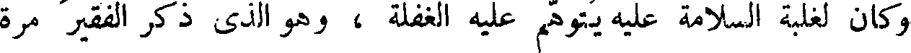
وكان لغلبة السلامة عليه يتوهم عليه الغفلة ، وهو الذي ذكر الفقير مرة
File: 000605.gt.txt (if the image is defective, simply delete all Arabic text and the line will be excluded)
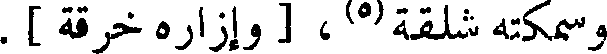
وسمكته شلقة(5) ، [ وإزاره خرقة ] .
File: 000606.gt.txt (if the image is defective, simply delete all Arabic text and the line will be excluded)
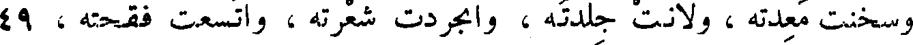
وسخنت معدته ، ولانت جلدته ، وانجردت شعرته ، واتسعت فقحته ، 49
File: 000607.gt.txt (if the image is defective, simply delete all Arabic text and the line will be excluded)
وكثرت دمعته ! !
File: 000608.gt.txt (if the image is defective, simply delete all Arabic text and the line will be excluded)
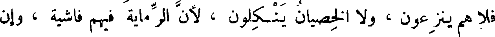
فلا هم ينزعون ، ولا الخصيان ينكلون ، لأن الرماية فيهم فاشية ، وإن
File: 000609.gt.txt (if the image is defective, simply delete all Arabic text and the line will be excluded)
كان الخصي أسوارا بلغ منهم(1) ، وإن كان جمع مع الرماية الثروة ، واتخذ
File: 000610.gt.txt (if the image is defective, simply delete all Arabic text and the line will be excluded)
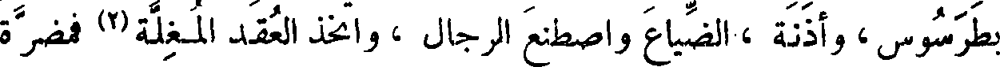
بطرسوس ، وأذنة ، الضياع واصطنع الرجال ، واتخذ العقد المغلة(2) فمضرة
File: 000611.gt.txt (if the image is defective, simply delete all Arabic text and the line will be excluded)
كل واحد منهم عليهم ، تفي بمضرة قائد ضخم . ولم تر عداوة قط تجوز
File: 000612.gt.txt (if the image is defective, simply delete all Arabic text and the line will be excluded)
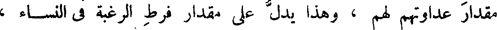
مقدار عداوتهم لهم ، وهذا يدل على مقدار فرط الرغبة في النساء ،
File: 000613.gt.txt (if the image is defective, simply delete all Arabic text and the line will be excluded)
وعلى شهوة شديدة للمباضعة ، وعلى أنهم قد عرفوا مقدار ما فقدوا ، وهذه 57
File: 000614.gt.txt (if the image is defective, simply delete all Arabic text and the line will be excluded)
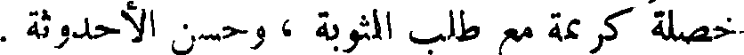
خصلة كريمة مع طلب المثوبة ، وحسن الأحدوثة .
File: 000615.gt.txt (if the image is defective, simply delete all Arabic text and the line will be excluded)
[خصاء الصابئة]
File: 000616.gt.txt (if the image is defective, simply delete all Arabic text and the line will be excluded)
فأما الصابئون ، فإن العابد منهم ربما خصى نفسه ، فهو في هذا الموضع
File: 000617.gt.txt (if the image is defective, simply delete all Arabic text and the line will be excluded)
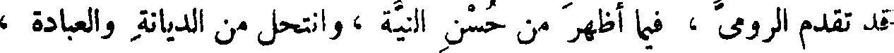
قد تقدم الرومي ، فيما أظهر من حسن النية ، وانتحل من الديانة والعبادة ،
File: 000618.gt.txt (if the image is defective, simply delete all Arabic text and the line will be excluded)
بخصاء الولد التام(3) ، وبإدخاله النقص على النسل ، كما فعل ذلك أبو المبارك
File: 000619.gt.txt (if the image is defective, simply delete all Arabic text and the line will be excluded)
الصابي . وما زال خلفاؤنا وملوكنا يبعثون إليه ، ويسمعون منه ، ويسمر
File: 000620.gt.txt (if the image is defective, simply delete all Arabic text and the line will be excluded)
عندهم ، للذي يجدونه عنده من الفهم والإفهام ، وطرف الأخبار ، ونوادر
File: 000621.gt.txt (if the image is defective, simply delete all Arabic text and the line will be excluded)
الكتب ، وكان قد أربى على المائة ، ولم أسمع قط بأغزل منه ،
File: 000622.gt.txt (if the image is defective, simply delete all Arabic text and the line will be excluded)
كان يصدق عن نفسه فما في الأرض أزنى منه .
File: 000623.gt.txt (if the image is defective, simply delete all Arabic text and the line will be excluded)
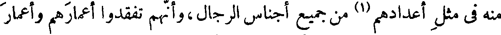
منه في مثل أعدادهم(1) من جميع أجناس الرجال،وأنهم تفقدوا أعمارهم وأعمار
File: 000624.gt.txt (if the image is defective, simply delete all Arabic text and the line will be excluded)
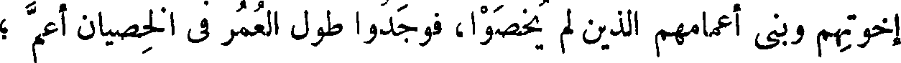
إخوتهم وبني أعمامهم الذين لم يخصوا، فوجدوا طول العمر في الخصيان أعم ؛
File: 000625.gt.txt (if the image is defective, simply delete all Arabic text and the line will be excluded)
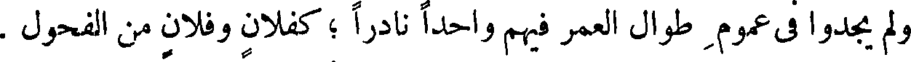
ولم يجدوا في عموم طوال العمر فيهم واحدا نادرا ؛ كفلان وفلان من الفحول .
File: 000626.gt.txt (if the image is defective, simply delete all Arabic text and the line will be excluded)
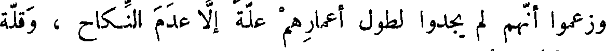
وزعموا أنهم لم يجدوا لطول أعمارهم علة إلا عدم النكاح ، وقلة
File: 000627.gt.txt (if the image is defective, simply delete all Arabic text and the line will be excluded)
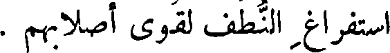
استفراغ النطف لقوى أصلابهم .
File: 000628.gt.txt (if the image is defective, simply delete all Arabic text and the line will be excluded)
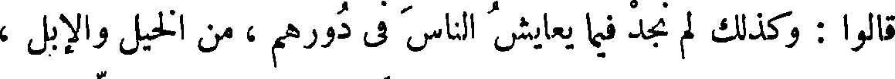
قالوا : وكذلك لم نجد فيما يعايش الناس في دورهم ، من الخيل والإبل ،
File: 000629.gt.txt (if the image is defective, simply delete all Arabic text and the line will be excluded)
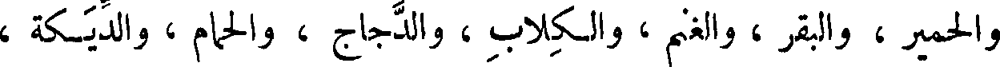
والحمير ، والبقر ، والغنم ، والكلاب ، والدجاج ، والحمام ، والديكة ،
To Save: `Ctrl+s`, make sure to choose `Webpage, complete`!